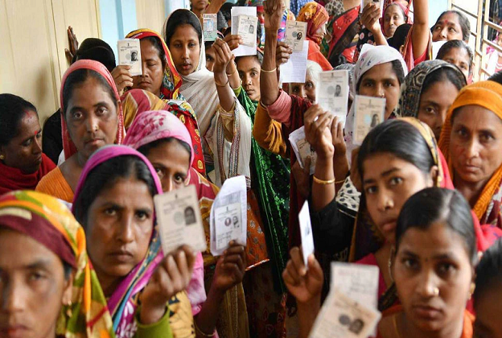

CURRENT-AFFAIRS JAN 29, 2022
India
1. Election Commission bans exit poll of UP elections, ban will remain in force during this time
The Election Commission is very serious about any kind of exit poll and has completely banned it, along with a provision of punishment and fine for violating it.
Lucknow: In Uttar Pradesh, where all the political parties are engaged in full preparations for the Vidhan Sabha elections, the Election Commission has made all the preparations to conduct the elections properly. In fact, the Election Commission is very serious about any kind of exit poll and has completely banned it, as well as a provision for punishment and fine has been made for violating it.
Taking a big decision, the State Election Commission has banned exit polls in UP. This ban will continue from 7 am on February 10 till 6:30 pm on March 7. No exit polls will be conducted on print or electronic media. Violator of this shall be punished with imprisonment of either description for a term which may extend to two years, or with fine, or with both. That is, from the morning of the first phase till the end of the last phase of voting, there will be a ban on showing exit polls.
2. Under the new excise policy, more than 500 liquor shops opened in Delhi, BJP is protesting
At least 552 new liquor shops have opened under the new excise policy in the capital New Delhi. These shops have been opened till January 28. Let us inform that this policy came into force on November 17 last year.
New Delhi: Under the new excise policy of the Delhi government, 552 liquor shops have opened in different areas of the national capital till January 28. Approval has been given to open 849 shops in Delhi. Government sources gave this information. This policy was implemented on November 17 last year. The updated list of operating liquor shops has been uploaded on the website of the Excise Department.
Liquor business in Delhi completely in private hands
Under the new excise policy, the business of liquor in Delhi has been completely handed over to private hands, under which 849 liquor shops have been allowed to open in 32 zones. To open a liquor shop, there should be at least 500 square meters of space. Delhi State BJP is opposing this policy. The BJP is ruled by the three municipal corporations of Delhi - North, East and South Delhi Municipal Corporation. The party alleges that liquor shops have been opened in violation of the rules.
Action taken on illegal liquor shops
The municipal corporations have also taken action against the liquor shops opened allegedly illegally. According to civic officials, till the first week of January, the three corporations have sealed around 25 liquor shops and issued notices to about 130 such shops. BK Oberoi, the head of the Standing Committee of the South Delhi Municipal Corporation, told PTI, 'Our action against illegal liquor shops is on. Yesterday we issued notices against several liquor shops for unauthorized construction and violation of building norms.
3. Police on target of terrorists, head constable shot dead in Anantnag
The police have come on the target of terrorists in Jammu and Kashmir. It is reported that the head constable was shot dead by terrorists in Anantnag. According to the report, the head constable died during treatment.
Srinagar: Terrorists on Friday shot dead a police personnel in Jammu and Kashmir's Anantnag district. A police official said that the terrorists opened fire on him near the house of Head Constable Ali Mohammad of Jammu and Kashmir Police located at Hasanpora in Bijbehara area of Anantnag at around 5.30 pm. He told that Mohammad was admitted to the hospital in a serious condition, where he died. According to the official, the area has been cordoned off and search is on for the attackers.
Search begins for attackers
According to the report, the area has been cordoned off by the police officers and search has been started for the attackers. Apart from this, terrorists hurled a grenade at the security forces in the Maharaj Bazar area of Srinagar, the capital of Jammu and Kashmir, but so far no one has been reported injured.
Terrorists hurled grenade in Maharaj Bazar Chowk area
Terrorists hurled a grenade at the Central Reserve Police Force and a team of policemen at 5.30 pm in the Maharaj Bazar Chowk area of Srinagar, a police official said. He said that there was no report of any casualty in the blast. The official said that the area has been cordoned off and search is on for the attackers.
4. JP Nadda targets Akhilesh, said - Those who called themselves farmer leaders did not do any good to the farmers
In Etawah today, BJP National President JP Nadda rained heavily on the opposition in Etawah, the stronghold of the Samajwadi Party. He said that the SP-BSP has done only caste politics. Not only this, he said that the Modi government has also increased the agriculture budget.
Etawah: Bharatiya Janata Party (BJP) national president JP Nadda fiercely attacked the opposition in Etawah, the stronghold of the Samajwadi Party. Attacking former Uttar Pradesh Chief Minister Akhilesh Yadav, Nadda said that those who called themselves farmer leaders did not do any good to the farmers. He said that the SP-BSP has done caste politics only in the state. At the same time, praising the BJP government, he said that under the leadership of Chief Minister Yogi, work has been done on the principle of Sabka Saath, Sabka Vikas and Sabka Vishwas. Nadda said, 'In the last five years, the pace of development in UP has increased a lot.'
Said- India's agriculture budget increased
JP Nadda did not stop there, he said, 'Many people tried to present themselves as a farmer leader, but no one could do what Prime Minister Narendra Modi did for the welfare of farmers. India's agriculture budget has been increased from Rs 22000 crore per annum (2014) to Rs 1.23 lakh crore.
5. Decline in corona cases in Delhi, 4,483 new cases surfaced in 24 hours, so many patients died
On Saturday, 4,483 new cases of Kovid-19 were reported in Delhi. The death of 28 patients was recorded during this period. On Saturday, the number of active patients in Delhi has been seen 24,800.
New Delhi: On Saturday, there was a steady decline in the cases of corona in the national capital, which is news of relief. On Saturday, 4,483 new cases of Kovid-19 were reported in Delhi. The death of 28 patients was recorded during this period. On Saturday, the number of active patients in Delhi has been seen 24,800.
decrease in corona infection rate
According to the Health Department of Delhi, there is a decrease in the infection rate of the city. The infection rate in the capital was 7.41 percent on Saturday. While the rate of corona infection in the city was recorded at 8.60% on Friday, the day before that i.e. on Thursday, this rate was 9.56%. The infection rate of corona in Delhi on January 4 was 8.37%. On January 3, 4099 cases were reported in the city. After about 20 days, these cases are gradually decreasing.
World
1. Ukraine-Russia Conflict: America sending troops to Eastern Europe, the world heading towards World War III?
Russia is not ready to bow down on the issue of Ukraine, while NATO, a military organization of 30 countries, is openly with Ukraine. Because of NATO, the two superpowers of the world, America and Russia, can also come in a face-to-face war. In such a situation, the world is now standing on the edge of the third world war.
New Delhi: Countries all over the world are getting entangled in the ongoing tension of Russia with Ukraine. US President Joe Biden has said that he will send a small number of his troops to Eastern Europe. To further confirm this, top American General Mark Miley has said that the consequences of going to war with Russia will be dire for both sides.
US tells 8,500 troops to be ready for deployment
As reported by our partner website WION, Ukrainian President Volodymyr Zelensky has urged leaders to stop panicking over Russian deployment to their border. President Biden said that NATO has announced to be ready to deploy 8,500 troops upon receipt of information.
However, President of the US Joint Chiefs of Staff, General Mark Milley, warned of the consequences, saying that the conflict over Ukraine would result in the death of a large number of people and would be very dire.
There is still room for diplomacy
US Defense Secretary Lloyd Austin said that there is still room for diplomacy while the conflict is not urgent. "There is no reason why this situation should turn into a conflict. He can choose to de-escalate. He can order his troops to move away from the Ukrainian border," Austin said.
2. The truth of the new corona virus! Will NeoCov kill every third patient?
From the city of Wuhan where the corona virus first spread all over the world, the scientists of the same Wuhan have given such information to the world, which has given people sleepless nights. Scientists said that one out of every three deaths will occur due to the new type of corona virus.
New Delhi: Scientists from Wuhan in China have given information about a new type of corona virus Neokov. It seems that the world is getting sleepless nights due to this. Speculation about its seriousness is haunting many.
According to the report of our partner website WION, some questions are being raised about this new corona virus. What is the truth behind this, let us know...
Is this a different type of corona virus?
It is a new strain or another type of corona virus such as SARS-CoV-2 or COVID-19. This is not a new variant like the Omicron or the Delta. The study, conducted by researchers from the Chinese Academy of Sciences and Wuhan University, suggests that NeoCoV is closely related to Middle East Respiratory Syndrome (MERS), a viral disease. It was first recognized in Saudi Arabia in 2012.
How worried should we be?
It is believed to be highly transparent and have a high mortality rate. According to scientists in Wuhan, one in three patients infected with NeoCoV could die due to complications.
3. Russia made a big statement about the war, warned Ukraine about this
Amid reports of Russia attacking Ukraine, the US and Germany have said a gas pipeline doubling Russian natural gas supplies to Germany could be hit if the Putin regime strikes.
MOSCOW: Amid fears of an invasion of Ukraine, Russian Foreign Minister Sergei Lavrov said on Friday that Moscow would not start a war, but warned that it would not allow Western countries to trample on its security interests.
Fears of attack on Ukraine
US President Joe Biden warned Ukraine's president a day earlier that there was a clear possibility that Russia could take military action against his country in February. Foreign Minister Lavrov said in an interview with a Russian radio station, 'As long as it is up to the Russian Federation, there will be no war, we do not want war. But we will not allow our interests to be trampled upon and neglected.
Russia has mobilized more than a million soldiers near the Ukrainian border, raising fears of war in the region. Russia has consistently denied that it is planning an attack on Ukraine, but the US and its NATO (North Atlantic Treaty Organization) allies believe that Russia is heading towards war and is preparing for it. .
4. CIA's 'black site' will now be sold, high-profile terrorists used to be kept in this place
In Europe's Lithuania, a house is being sold in which high profile prisoners were kept. It was used by the CIA to interrogate terrorists.
Various means available for torture
According to claims made in the European Court of Human Rights, the detainees were kept in sound-proof rooms, where they were kept in chains and blindfolded. His eyes were illuminated brightly and loud noises were made in the room, due to which he could not sleep.
The mastermind of 9/11 and Al Qaeda trainer were also kept here.
The detainees who were kept here included Khalid Sheikh Mohammed, the mastermind of 9/11 and Abu Zubeida, a recruiter and trainer of Al Qaeda. After the closure of this site by the CIA, it was used for the Lithuanian Intelligence Service. Since the year 2017, it is being looked after by the Real Estate Fund of the country, which is now selling it.
There are 10 small rooms without windows
The site has its own water supply and generator is also present. There is a main building with steel barn for administrative facilities. The barn has 10 soundproof and windowless cubicles where prisoners were kept. It is believed that before the prisoners were taken to the cubicles without windows, their beards and hair were shaved. After this, their feet were tied with blindfolds.
5. Japan: Company sued for cancer, demanded 40 crores in damages
Six Japanese youths have sued the company that operates the Fukushima nuclear plant. He alleges that after the incident at the plant in 2011, he got thyroid cancer due to radiation.
Tokyo: Six Japanese youths have sued the company that operates the Fukushima nuclear plant. He alleges that he developed thyroid cancer after being exposed to radiation during a meltdown at the plant in 2011. The victims' lawyers marched to the Tokyo District Court, where dozens of supporters gathered.
Company sued for the first time regarding health issue
The plant is operated by Tokyo Electric Power Company (TEPCO). This is the first time that someone has filed a lawsuit against the company over health issues. The ages of the generations are between 7 and 27 years. He was living in the Fukushima area when a major earthquake triggered a tsunami on March 11, 2011, leading to a nuclear disaster.
seeking $5.4 million in compensation
His lawyers said he had surgery to remove all of his thyroid glands that had been affected by radiation. The victims are demanding 616 million yen (about Rs 40 crore 60 lakh) as compensation. However, last year a UN expert panel concluded that the disaster did not directly cause any health problems for the people living in the area.
business
After the protest, SBI changed the recruitment policy of women, Delhi Commission for Women issued notice
State Bank of India (SBI) has had to withdraw the new rules related to the recruitment of pregnant women after criticism. In this case, the Delhi Commission for Women has also issued a notice to the bank management.
New Delhi: State Bank of India (SBI), one of the country's largest public sector banks, has decided to put on hold the circular related to the recruitment of pregnant women after criticism. Taking cognizance of this matter, Delhi Commission for Women Chairperson Swati Maliwal issued a notice to the bank management on Saturday and directed them to file their reply within 48 hours.
The bank had recently issued new rules
In fact, SBI had recently reviewed the 'Fitness Criteria for Recruitment in Banks' including the rules prescribed for pregnant women candidates. Under the new rules (SBI Woman Recruitment) issued after the review, women candidates who are pregnant for more than three months will be considered 'temporarily ineligible'. That is, after getting selected, they will not be given joining in the bank. With this, pregnant women will be able to join the bank only after four months of delivery.
Labor organizations had told anti-women
Labor organizations and various sections of the society had demanded to withdraw this provision of SBI, calling it anti-women. Seeing the increasing protests on this matter, SBI announced the suspension of new guidelines in the recruitment of pregnant women candidates.
2. ITR Filing: Working News! Government will prosecute these taxpayers, may be jailed
ITR Filing: The Central Board of Direct Taxes has extended the date for filing Income Tax Return for Assessment Year 2021-22. Earlier the deadline for filing ITR was December 31, which has been extended to March 31. If you do not fill ITR before the deadline, then the government can prosecute you.
New Delhi: ITR Filing Date Extended: If you have not filed Income Tax Return (ITR) yet, then there is important news for you. The Central Government has set March 31 as the deadline for filing ITR. If you do not file the return before the due date, then you can be jailed along with fine. Let us know in detail.
Earlier the date was 31st December
It is worth noting that according to the new guidelines of income tax return, now income tax return can be filed till March 15. According to the information given by the Central Board of Direct Taxes (CBDT), the date for filing income tax return for the assessment year 2021-22 has been extended to 15 March 2022. Earlier the deadline for filing ITR was December 31. If you do not file the return before the due date, then you may be in trouble.